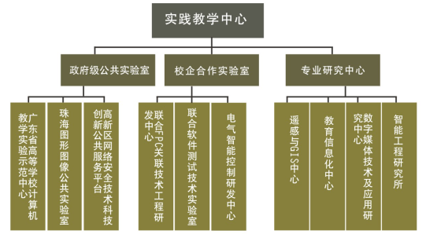

■ 建设专业完备实验室
应用型人才的特点之一是动手能力强。为了给学生提供更多的实践机会，充分提高动手能力，2002年10月，由信息技术学院负责，组建了计算机教学实验中心，并建立了一套完善的实验教学方法和实验教学管理机制，为培养应用型人才提供强有力的保障。目前，中心已拥有多个配置先进的专业实验室：电子技术实验室、计算机原理实验室、嵌入式系统实验室、网络应用技术实验室、图形图像与数字城市实验室。同时，还建有供学生参加科研实践的研究型实验室，如学生专业项目实验室、软件、电子商务和游戏实验室等。由于工作出色，2007年学院的计算机实验中心被评为“广东省计算机实验教学示范中心”。这些实验室的建设极大地促进了我院实验教学工作的开展，同时也为开展产学研合作奠定了坚实的基础。
■ 课程设置适应IT行业发展
学院充分挖掘学科资源，制定较完整的专业培养方案，服务于社会经济发展的人才需要。在前两年的学习中重视基础理论学习与全国重点大学教学计划同步，做到厚基础，宽口径。后两年的学习中，加强应用与实践学习，与社会需求接轨。此外，教学技术中增加多门应用型课程，例如：UNIX/LINUX操作系统、大型数据库、信息安全基础、.net编程技术、J2EE企业级应用开发、视频编缉、网站规划与建设、嵌入式系统、GIS软件二次开发、软件测试与质量保证等课程，并在教学中采用任务驱动的教学方式，学生动手实践能力得到了很大提高。
■ 技术实践体系
学院重视对学生基本素质的培养，尤其在编程方面，采用全新方式对C语言和数据结构进行授课，奠定编程及算法的基础。学院每年组织全校程序设计竞赛以提高同学的编程兴趣和能力。学院建设了学生项目实践基地并配备专业指导老师，形成良好的学生科研氛围。学生从二年级起就自发组建团队开展项目研究，而项目来源于社会需求或老师的科研课题。通过科研项目的实战开发，同学们的成长进步很快。学院每年举办雏鹰展翅IT节，开展软件程序设计竞赛、计算机作品大赛、数码创意设计大赛和电子设计竞赛，以及学生创新科技成果交流活动，给同学们提供展现自己的才华的舞台与机会。
实践教学机构图：

■ 构建校企合作平台，打开学生实习就业之门
学院坐落在风景优美的海滨城市珠海，位于珠海高新科技产业开发区的核心地带，毗邻国家级软件园区——南方软件园。学院与周边各软件和集成电路企业及研究机构保持着密切的合作关系，为学院的教学、实践以及学生日后的就业、创业营造了优越的环境。学院目前已经与珠海、深圳、广州、中山、上海、大连等地近180家IT企业建立了合作关系，学院专门安排四年级学生到合作企业或学校去实习三个月到半年，把学生的专业学习与社会需求及今后的发展更紧密地结合起来，提前让学生做好融入社会的心理准备及角色转换。
■ 产学研全面发展
学院重视科研，特别是与经济发展紧密结合的应用型研究项目。本着以科研促教学进步，以科研促产业发展的建院思路。近年来已经获得纵向和横向科研课题数十项，这些项目有力地带动了中青年教师的业务进步，同时也给大学生创造了参加科研项目的有利条件。在此基础上，学院申请的珠海高新区“网络安全公共技术服务平台”已经挂牌；珠海市科技创新“图形图像公共实验室”也获得批准，并授予牌匾，更推进了大学和产业的结合，共同为珠海的经济建设服务。